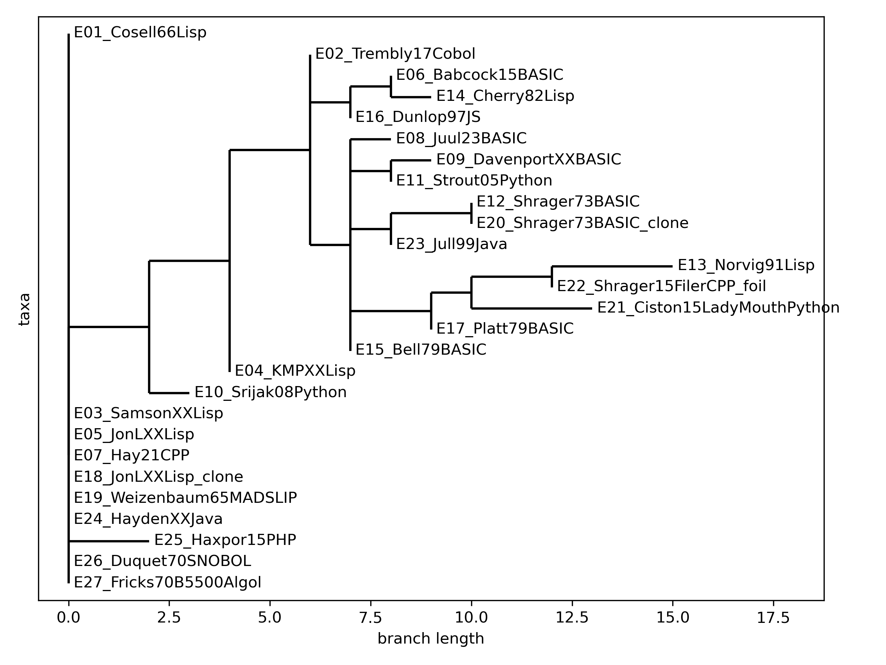

The Genealogy of ELIZA
Can we build a family tree of ELIZA programs from the code itself? This page reports on the current state of the ELIZAGen code-phylogeny project, which treats ELIZA implementations like biological specimens and applies the tools of phylogenetics to them.
Over six decades ELIZA has been reimplemented hundreds of times: copied, ported across languages, rebuilt from published descriptions, simplified for teaching, and reimagined as art. Software has no material continuity of the kind that anchors biological or manuscript genealogies, so instead of comparing source text we compare architecture. Each program is described by a set of abstract features (does it rank keywords? does it have a backtracking matcher? does it keep a memory of earlier inputs?), and the resulting character matrix is analyzed with PAUP*, the standard parsimony software from evolutionary biology.
The current corpus contains 27 specimens spanning 1965–2025 in eight languages, described by 13 binary features. The work is in progress and is written up in a draft paper, Reconstructing Program Genealogies from Abstract Program Descriptions: The ELIZA Case Study (Jeff Shrager, December 2025).

Reading the tree
A basal polytomy of complete ELIZAs. At the root sit programs that preserve the entire ELIZA architecture and are indistinguishable on these features: Weizenbaum's 1965 MAD-SLIP original, Bernie Cosell's 1966 BBN Lisp (written from the CACM paper without seeing Weizenbaum's code), several other Lisp versions, the 1970 SNOBOL and Burroughs B5500 Algol versions, a Java version, and Anthony Hay's 2021 C++ reconstruction. Six decades and very different languages, but the same design.
A derived clade of simplifications. Branching away from that core are mostly BASIC versions from the microcomputer era (descendants of Jeff Shrager's 1973 BASIC ELIZA, published in Creative Computing in 1977) together with Python, JavaScript and some simplified Lisp versions. These typically drop backtracking, memory and keyword priority, whether because of the limits of early microcomputers, for teaching purposes (e.g., Norvig's 1991 Lisp in PAIP), or simply because of a different programming culture.
Validation specimens. Three specimens test the method:
- A pair of byte-for-byte identical clones (E18, E20) land together with zero branch length, as they should.
- A control (E22, a pattern-matching file utility that has nothing to do with conversation) nests inside the ELIZA clade. The current features therefore capture general pattern-matching architecture rather than anything specifically conversational, and better conversational features are needed.
- LadyMouth (E21, Sarah Ciston's feminist critical-art chatbot) scores zero on every feature. It sits at maximal distance: it belongs to the ELIZA tradition by name and critique, not by architecture.
The paper argues that the result is best read not as a literal line of descent but as a map of a textual tradition, showing how implementations relate through preservation, adaptation, convergent reimplementation and critique.
How it was made
- Collect and normalize. Specimens were gathered from archives, publications and repositories, then lightly normalized (whitespace, comments, metadata).
- Extract features with an LLM, then curate by hand. A language model proposed structural and behavioral features for a first program. The vocabulary was hand-edited, then expanded in a round-robin pass over all specimens until no new features appeared, with manual curation after each round.
- Classify. Every specimen was scored on the frozen vocabulary, producing a program-by-feature matrix.
- Infer trees. The matrix was converted to NEXUS and analyzed in PAUP* under parsimony (heuristic search, TBR branch swapping), and the resulting trees were drawn with Biopython.
The features
- Rule-based pattern matching
- Behavior is driven by an explicit set of rules, each with patterns and associated responses, rather than purely procedural or statistical logic.
- Keyword priority
- Keywords or rules carry numeric priorities that decide which rule is applied.
- Synonym translation
- A mapping normalizes surface forms (synonyms, inflections) into canonical tokens before rules are applied.
- Backtracking matcher
- The matcher can consume variable-length segments of input and backtrack over them to satisfy complex patterns.
- Wildcards & classes
- The pattern language supports wildcards (e.g., numeric segment placeholders) and token classes or property-based matches.
- Segment storage
- Matched input segments are stored for later reference during response generation.
- Template reassembly
- Responses are built by filling templates that refer to matched segments by position.
- Memory rules
- Selected past inputs are stored and later retrieved by dedicated memory rules.
- Fallback rule
- An explicit default ("last resort") rule applies when nothing more specific matches.
- Punctuation-sensitive
- Input is tokenized with an explicit set of separator and breaker characters, so punctuation shapes tokens and phrases.
- Ordered memory
- Memory is recalled in order (rather than at random).
- List/symbol processing
- The program primarily uses list-and-symbol processing rather than string processing.
- Separable script
- The script is essentially separate from the language-processing code (whether or not it lives in a separate file).
The specimens and their features
✓ = feature present, blank = absent, ? = could not be determined. Each specimen name links to the (normalized) source code that was analyzed.
| Specimen | Rule-based pattern matching | Keyword priority | Synonym translation | Backtracking matcher | Wildcards & classes | Segment storage | Template reassembly | Memory rules | Fallback rule | Punctuation-sensitive | Ordered memory | List/symbol processing | Separable script |
|---|---|---|---|---|---|---|---|---|---|---|---|---|---|
| E01 Cosell66Lisp | ✓ | ✓ | ✓ | ✓ | ✓ | ✓ | ✓ | ✓ | ✓ | ✓ | ✓ | ✓ | ✓ |
| E02 Trembly17Cobol | ✓ | ✓ | ✓ | ✓ | ✓ | ✓ | ✓ | ||||||
| E03 SamsonXXLisp | ✓ | ✓ | ✓ | ✓ | ✓ | ✓ | ✓ | ✓ | ✓ | ✓ | ✓ | ✓ | ✓ |
| E04 KMPXXLisp | ✓ | ✓ | ✓ | ✓ | ✓ | ✓ | ✓ | ✓ | ✓ | ||||
| E05 JonLXXLisp | ✓ | ✓ | ✓ | ✓ | ✓ | ✓ | ✓ | ✓ | ✓ | ✓ | ✓ | ✓ | ✓ |
| E06 Babcock15BASIC | ✓ | ✓ | ✓ | ✓ | ✓ | ✓ | ✓ | ||||||
| E07 Hay21CPP | ✓ | ✓ | ✓ | ✓ | ✓ | ✓ | ✓ | ✓ | ✓ | ✓ | ✓ | ✓ | ✓ |
| E08 Juul23BASIC | ✓ | ✓ | ✓ | ✓ | ✓ | ✓ | ✓ | ||||||
| E09 DavenportXXBASIC | ✓ | ✓ | ✓ | ✓ | ✓ | ✓ | ✓ | ✓ | |||||
| E10 Srijak08Python | ✓ | ✓ | ✓ | ✓ | ✓ | ✓ | ✓ | ✓ | ✓ | ✓ | |||
| E11 Strout05Python | ✓ | ✓ | ✓ | ✓ | ✓ | ✓ | ✓ | ||||||
| E12 Shrager73BASIC | ✓ | ✓ | ✓ | ✓ | ✓ | ✓ | ✓ | ||||||
| E13 Norvig91Lisp | ✓ | ✓ | ✓ | ✓ | ✓ | ✓ | ✓ | ✓ | |||||
| E14 Cherry82Lisp | ✓ | ✓ | ✓ | ✓ | ✓ | ? | ✓ | ✓ | |||||
| E15 Bell79BASIC | ✓ | ✓ | ✓ | ✓ | ✓ | ✓ | |||||||
| E16 Dunlop97JS | ✓ | ✓ | ✓ | ✓ | ✓ | ✓ | |||||||
| E17 Platt79BASIC | ✓ | ✓ | ✓ | ✓ | |||||||||
| E18 JonLXXLisp clone | ✓ | ✓ | ✓ | ✓ | ✓ | ✓ | ✓ | ✓ | ✓ | ✓ | ✓ | ✓ | ✓ |
| E19 Weizenbaum65MADSLIP | ✓ | ✓ | ? | ✓ | ✓ | ✓ | ✓ | ✓ | ✓ | ✓ | ✓ | ✓ | ✓ |
| E20 Shrager73BASIC clone | ✓ | ✓ | ✓ | ✓ | ✓ | ✓ | ✓ | ||||||
| E21 Ciston15LadyMouthPython | |||||||||||||
| E22 Shrager15FilerCPP foil | ✓ | ✓ | ✓ | ✓ | ✓ | ||||||||
| E23 Jull99Java | ✓ | ✓ | ✓ | ✓ | ✓ | ||||||||
| E24 HaydenXXJava | ✓ | ✓ | ✓ | ✓ | ✓ | ✓ | ✓ | ✓ | ✓ | ✓ | ✓ | ✓ | ✓ |
| E25 Haxpor15PHP | ✓ | ✓ | ✓ | ✓ | ✓ | ✓ | ✓ | ✓ | ✓ | ✓ | ✓ | ||
| E26 Duquet70SNOBOL | ✓ | ✓ | ✓ | ✓ | ✓ | ✓ | ✓ | ✓ | ✓ | ✓ | ✓ | ✓ | ✓ |
| E27 Fricks70B5500Algol | ✓ | ✓ | ✓ | ✓ | ✓ | ✓ | ✓ | ✓ | ✓ | ✓ | ✓ | ✓ | ✓ |
Data, code and paper
Everything is in the genealogy folder of the ELIZAGen GitHub repository:
- Draft paper: PDF · LaTeX source · bibliography
- Results: feature matrix (CSV) · feature vocabulary (YAML) · NEXUS file · trees · PAUP* log
- Pipeline: how-to and README · elizagen_library.py · cvs2nexus.py · draw_paup_trees.py
- Specimens: source code for all 27 programs
- Working notes: LLM conversations from the analysis
This project grew out of the 2022 blog post A Code-Based ELIZA Phylogeny. If you know of an ELIZA implementation that should be in the corpus (especially pre-microcomputer, non-English, or artistic ones), please write to Jeff Shrager (jshrager@gmail.com).